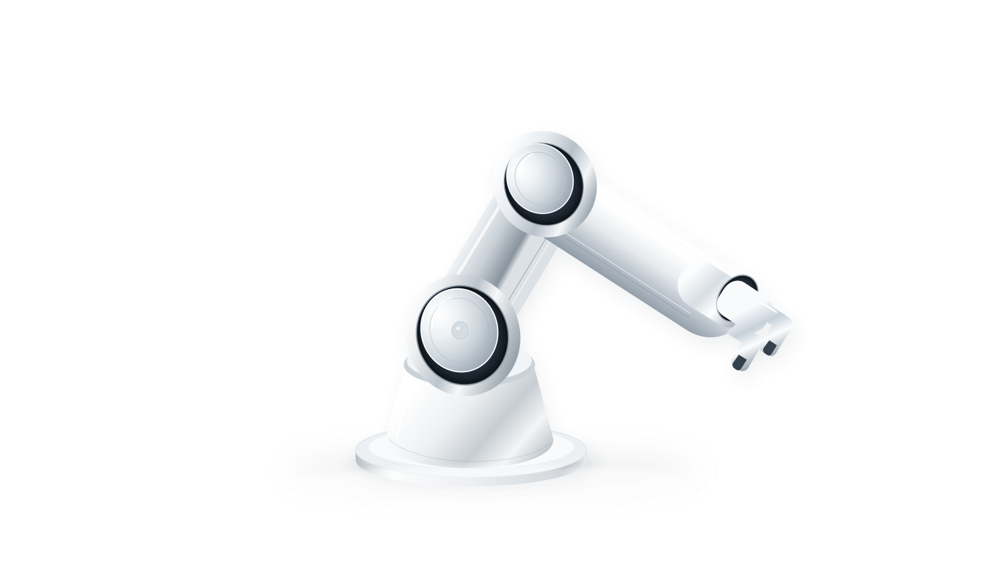
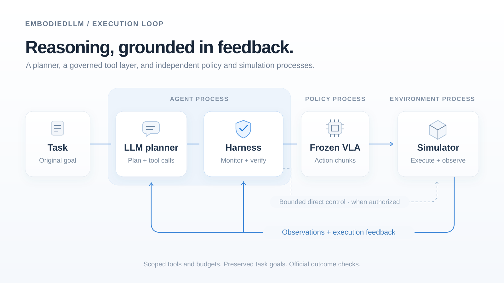
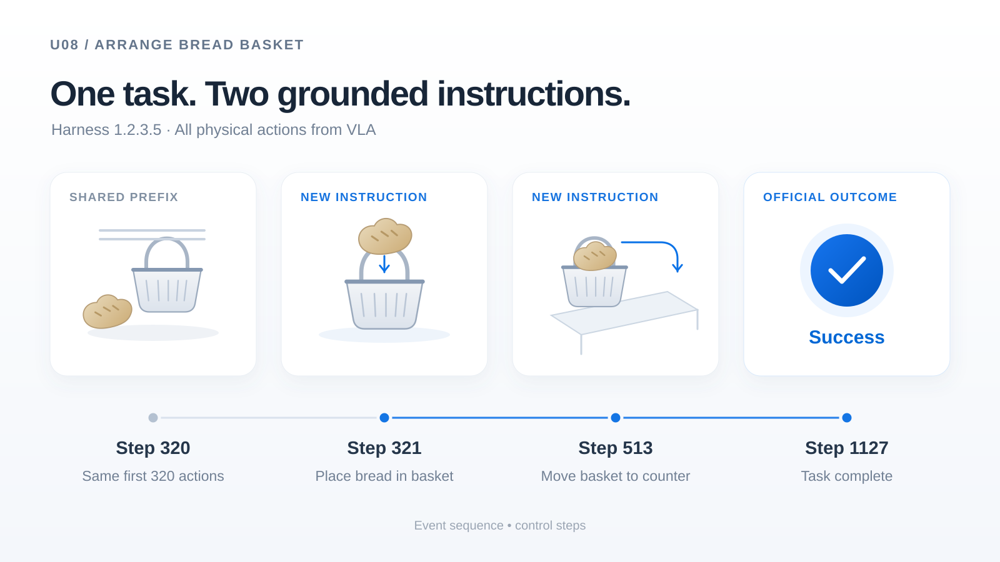

Initial autonomy
Start with
what the policy knows.
Historical capability records guide how execution begins.
EmbodiedLLM
High-level reasoning. Frozen robot policies.
One execution loop.

An execution layer for physical intelligence.
A robot policy brings the ability to act.
EmbodiedLLM brings a way to guide it.
Its Harness connects a language-model planner, a frozen vision-language-action policy, and the simulator. It uses capability information and execution feedback to decide when to continue, adjust an instruction, or enter bounded recovery.
Initial autonomy
Historical capability records guide how execution begins.
Progress monitoring
Recent evidence informs continuation, review, and escalation.
Progressive recovery
Adjust the instruction, use authorized motor tools, then hand back.
The system
Reason about the task. Execute through the policy.
Check the outcome. Keep the policy weights fixed.

Execution loop
Agent process
Policy process
Frozen VLAAction chunksEnvironment process
SimulatorExecute + observeSimulator → LLM planner + Harness
Harness → Simulator
When authorized
Scoped tools and budgets. Preserved task goals. Official outcome checks.
Task instructions, observations, and capability information inform high-level decisions.
Operation identity, recovery permissions, and action budgets remain explicit.
Local progress checks support execution. Environment evidence determines task success.
Execution study
72 fixed RoboCasa scenes across atomic,
composite-seen, and composite-unseen tasks.
53/72
73.61% across the selected scenes.
39/42
Three became unsuccessful.
14/30
Outcome changes across recorded runs.
Harness 1.2.3.5 · RoboCasa · 72 selected scenes.
Recorded execution routes across the same 72 scenes.
Recorded case studies
Explore two moments when the current goal
changed the instruction sent to the VLA.

U08 · ArrangeBreadBasket
A long instruction becomes two stage-specific directions. The robot places the bread, then carries the basket to the dining counter.
SC23 · WashLettuce
One recorded path through failure review,
bounded direct control, and resumed VLA execution.
Two public failure reviews.
Bounded direct-control interval.
Policy execution resumes.
Successful environment outcome.
Handback is an explicit control transition. The final outcome belongs to the complete execution.